Pavement Curling
Pavement curling is a specific physical instance of the broader phenomena known as Curling and Warping in concrete pavements [10]. While these terms are often grouped together due to their similar mechanical origins involving differential strain from environmental gradients, they are distinguished by their primary cause: curling results from nonuniform temperature gradients, whereas warping is induced by moisture gradients between the top and bottom surfaces of the slab [4]. Consequently, pavement curling specifically refers to the upward or downward deformation driven by these thermal differences, distinct from the moisture-driven warping that also contributes to overall slab curvature [6]. This deflection behavior has been studied since the mid-1920s and can lead to fatigue failures including top-down and bottom-up transverse, longitudinal, and corner cracking when combined with traffic loading. [1]
Sources (14)
Mechanisms and Driving Factors
The magnitude of the temperature gradient across the slab depth [1] influences deformation, with a linear relationship existing between the actual measured temperature difference and the equivalent temperature difference associated with slab displacement under pure environmental loading [2]. Typically, the maximum upward curling condition occurs during early morning hours just before sunrise, whereas the maximum downward curling condition generally develops around noon or in the very early afternoon when solar heating is at its peak [3]. Construction of PCC pavements under higher ambient temperatures, lower relative humidity conditions, or higher wind speeds can increase the magnitude of curling and warping [1]. Furthermore, the shrinkage equivalent temperature difference has a more significant effect on curling and warping behavior than the hourly or total equivalent temperature differences, indicating that moisture-related shrinkage plays a dominant role in slab deformation compared to transient thermal gradients [4].
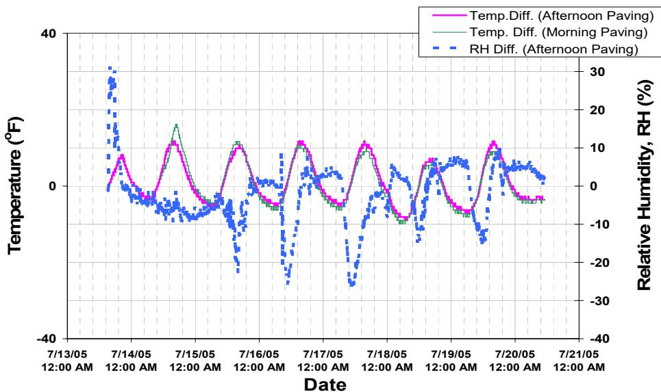
Marshalltown site—hygrochron relative humidity measurements [2]Base conditions also play a critical role; soft underlying base courses result in less curling [1], and while a soft underlying base course reduces curling, a base with good drainage is preferred to minimize warping, though repeated traffic loading may induce additional tensile stresses in softer bases [1]. During spring and fall conditions, slower strength development combined with larger thermal and moisture gradients leads to higher curling stresses, reducing the margin between concrete stress and strength to as low as 6.2 psi [5]. Despite these elevated stresses, HIPERPAV analyses indicate that cracking does not occur within three days if the weather remains near typical seasonal averages [5]. Additionally, concrete creep can partially relieve curling stresses over time [1].
While seasonal ambient temperature changes can affect the full depth of a PCC slab, the diurnal temperature effect primarily influences only the top half, as the temperature difference between mid-depth and bottom due to diurnal effects is almost negligible [1].
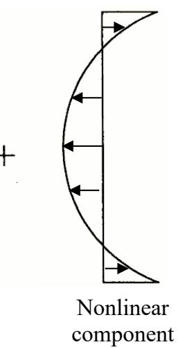
Typical temperature distribution throughout concrete slab depth [1]Within this cycle, upward curling occurs when the bottom of the slab is warmer than the top (overnight/early morning, just before sunrise), causing slab corners and edges to curl upward [3]; conversely, downward curling occurs when the top of the slab is warmer than the bottom (noon/early afternoon, surface heated by the sun) [3].
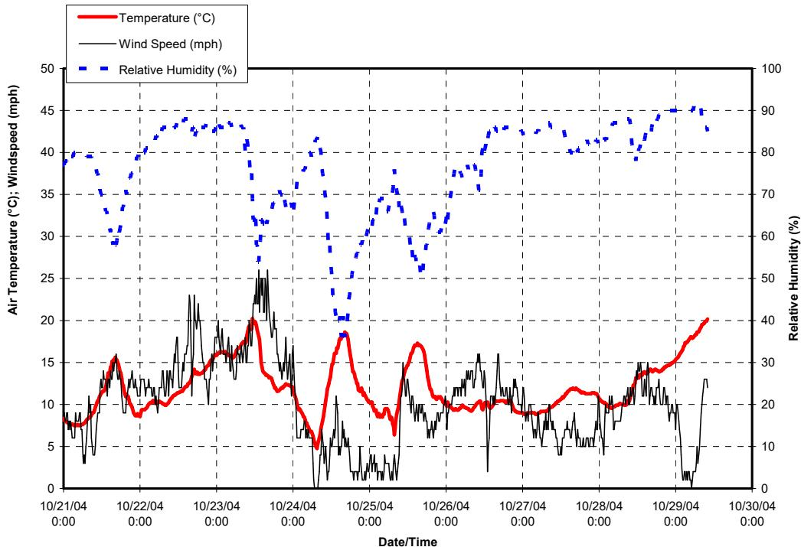
Recorded environmental conditions [3]Maximum conditions are highly dependent on climatic conditions such as cloud cover [3], and while general timing is described, it is not specified that maximum upward curl typically occurs just before sunrise while maximum downward curl peaks around noon or early afternoon when solar heating is greatest [3].
Thermal and Moisture Properties of Concrete
The aggregate properties of a mixture significantly influence pavement behavior; specifically, coarse aggregates with a lower CTE and lower water absorption reduce curling [1]. Pavement temperature generally exceeds ambient temperature and follows a similar pattern but with a one- to two-hour lag [2], and the peak temperature within a concrete slab occurs later during the day for thicker pavements because greater mass requires more time to reach thermal equilibrium with ambient changes [6]. Furthermore, changes in the moisture content of a mixture result in volume changes that can lead to warping or cracking of a pavement slab, where differential drying shrinkage is responsible for upward warping because the top of the slab is often drier than the bottom [7]. Concrete can also change volume due to self-desiccation, resulting in autogenous shrinkage, which is important to account for when the w/cm ratio is less than 0.40 [7].
The use of supplementary cementitious materials (SCMs) also alters these dynamics, as concrete containing SCMs like fly ash and slag exhibits a lower maximum heat of hydration compared to ordinary Portland cement (OPC), which reduces the risk of thermal cracking associated with steep temperature gradients [5]. For these SCM concretes, the datum temperature is higher than -10°C, requiring adjusted time-temperature factor calculations to accurately predict strength development and curling potential [5]. Additionally, internally cured concrete exhibits lower coefficient of thermal expansion (CTE), lower modulus of elasticity, higher compressive strength, and lower ultimate shrinkage compared to conventional mixes [8].
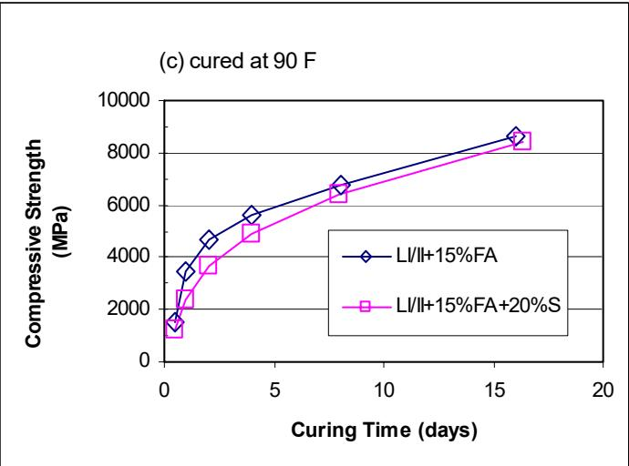
Effect of SCMs on mortar strength (Lafarge cements) [5]Impact of Slab Geometry and Design Parameters
The geometry and dimensions of a slab significantly influence its structural behavior, as thicker, shorter slabs show lower curling [1]. Specifically, skewed slabs experience higher curling stresses at corners than rectangular slabs [1], with non-LTPP data showing that rectangular joints had lower curling than skewed joints (82.0 vs. 94.3 in./mile). For LTPP sections, a 12 ft width had higher curling (114.1 in./mile) than a 14 ft width (97.4 in./mile), while an 8 in. thickness had higher curling (114.1 in./mile) than 11 in. (97.4 in./mile). Furthermore, widened JPCP slabs (14 ft wide) exhibit higher top-to-bottom tensile stress ratios compared to regular slabs (12 ft wide), particularly when paired with tied PCC shoulders, which increases the potential for longitudinal cracking at transverse joints [9]. To minimize the severity and extent of curling-related cracking in 14 ft widened JPCP panels, it is recommended to maintain a width-to-thickness ratio between 1.2 (requiring 12 in. thickness) and 1.5 (requiring 9.5 in. thickness) [9].
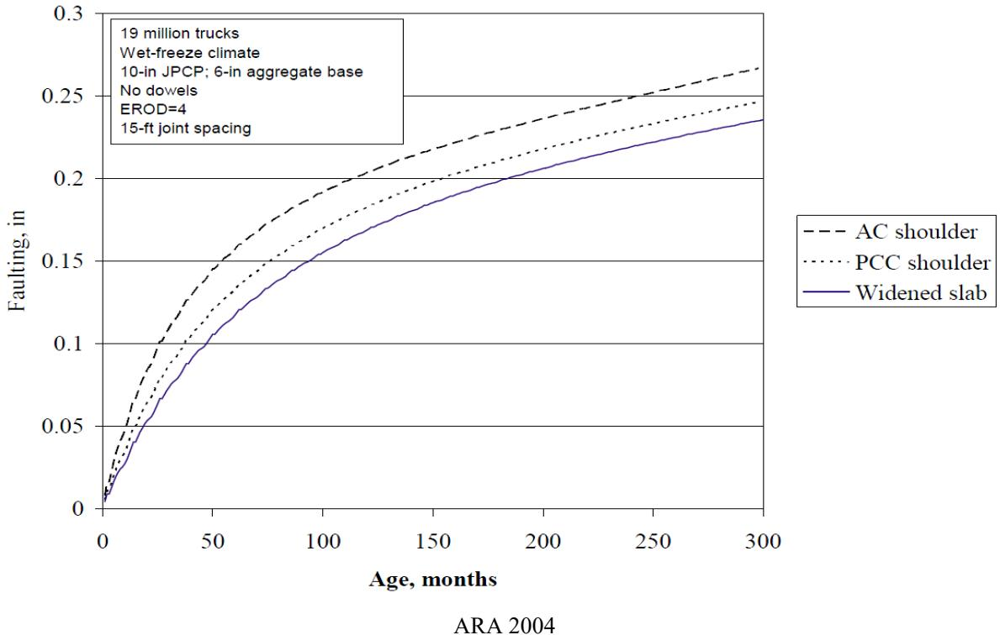
Effects of lateral edge support on joint faulting in JPCP [9]Material properties and reinforcement also play critical roles in curling behavior. Internally cured pavements can achieve a reduced minimum slab thickness of 7 inches for low-traffic applications compared to the standard 8-inch baseline required for conventionally cured concrete [8]. Additionally, LTPP sections utilizing larger diameter dowel bars exhibited reduced curling and warping across all measured indicators, although this benefit is often correlated with thicker slab thicknesses; conversely, LTPP projects constructed with high-strength mixes demonstrated higher curling behavior compared to those using low-strength mixes [4].
Slab Corner Upward Curvature
Regarding slab behavior, upward curvature at PCC slab corners can reach up to 1 inch (2.5 cm), though cracking is typically not excessive enough to disqualify a slab if curling remains below 0.25 inches [1]. A high degree of built-in curling can result in increased long-term curling and warping over a pavement’s service life, potentially leading to poor performance; this early-age deformation behavior is influenced by construction conditions such as ambient temperature, relative humidity, and wind speed during placement [1]. Field investigations in Iowa (IHRB TR-668) found that JPCP sites with higher degrees of curling also exhibited lower PCI and higher IRI, with cracks observed at sites combining high curling with higher traffic volumes [1]. High-speed profiler testing on concrete overlays indicates that built-in curling and warping often exert a more significant influence on roughness than seasonal or diurnal effects, with IRI and Curvature IRI ranges across multiple measurements frequently remaining under 10 in./mi [10].
 Curling and warping behavior of concrete pavement slabs [10]
Curling and warping behavior of concrete pavement slabs [10]
Internal tensile stresses in a PCC slab are further magnified under repetitive vehicle loading due to restraints such as dowel bars and friction between the slab and base course, which can lead to transverse cracking [6]. For instance, a four-axle truck configuration with axle loads positioned near the transverse edges of adjacent slabs generates significantly higher top-to-bottom tensile stress ratios (up to 2.7) and promotes top-down longitudinal cracking initiation at joint locations [9]. Longitudinal cracking in JPCP typically initiates 2 to 4 feet from the slab edge within the traffic lane, often starting at transverse joints where high tensile stress accumulation occurs under combined mechanical and thermal loading [9]. Furthermore, skewed joint geometries in widened JPCP pavements demonstrate a higher potential for longitudinal cracking compared to rectangular joint designs, with field observations confirming that most longitudinal cracks occur at skewed joints [9].
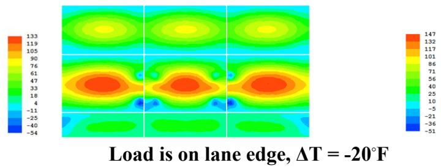
Tied PCC shoulder with widened slab – top tensile stress distribution for four temperature load cases [9]The curled-down condition during daytime is considered more harmful than the curled-up nighttime condition because it combines maximum tension at the slab bottom under traffic loads with higher daily traffic volumes [4].
Multi-axle loads during nighttime temperatures become more critical if the built-in curling magnitude is large enough, potentially causing slabs to split from the top down rather than from the bottom up [4].
Measurement Methods and Profiling Technologies
Strain gages placed at the top and bottom of concrete slabs capture opposing deformation behaviors under environmental loads; for instance, upward curling induces tensile strain at the top surface while simultaneously generating compressive strain at the slab bottom. [6]
 Strain measurement: curling and warping [6]
Strain measurement: curling and warping [6]
- Stationary LiDAR (Light Detection and Ranging) used in IHRB TR-668 to scan slab surfaces and calculate relative deflection [1]
- FWD (Falling Weight Deflectometer) measurements
- Inclinometer profilers (used in earlier EFD studies) [3]
Linear variable distance transducers (LVDTs) can be installed at strategic locations such as corners and mid-slab free edges to measure absolute vertical slab movement due to curling and warping. [3]
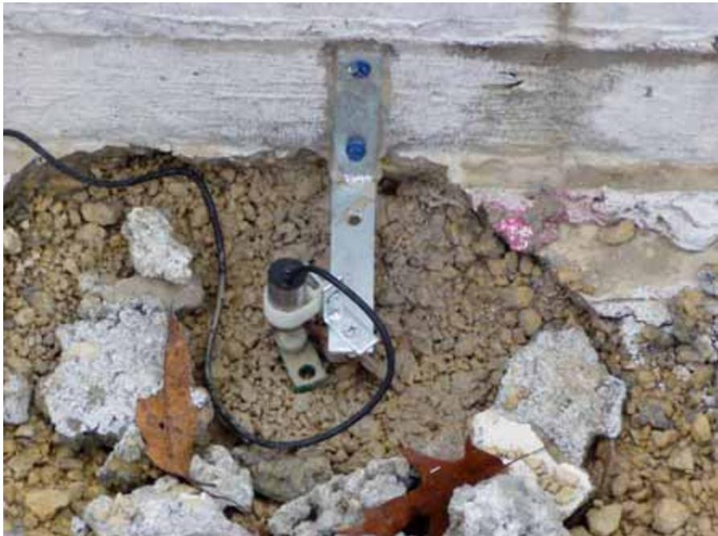
LVDT installation (Transtec) [3]Curling and warping issues increase scatter in backcalculated PCC layer moduli predictions because they alter the bonding degree between layers and influence deflection profiles. [11]
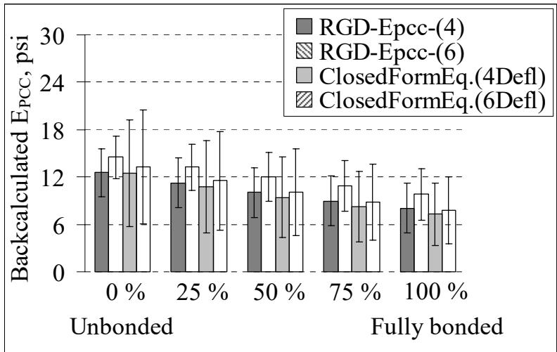
Effect of degree of layer bonding on E_P C C backcalculation [11]Strain gages used for pavement health monitoring should have a length three to five times the maximum aggregate size to precisely capture strain values within the concrete matrix. [6]
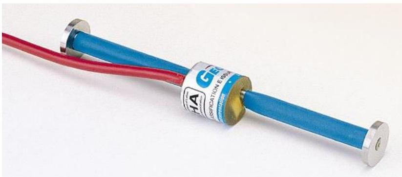
Copyright ©2016 Geokon, Inc. All Rights Reserved Figure 17. Geokon model 4200 strain gage [6]LiDAR point cloud data enables the extraction of curling and warping degrees at specific points, along defined paths, or within designated areas, providing a comprehensive visualization of overall slab curvature compared to conventional single-line profile measurements. [1]
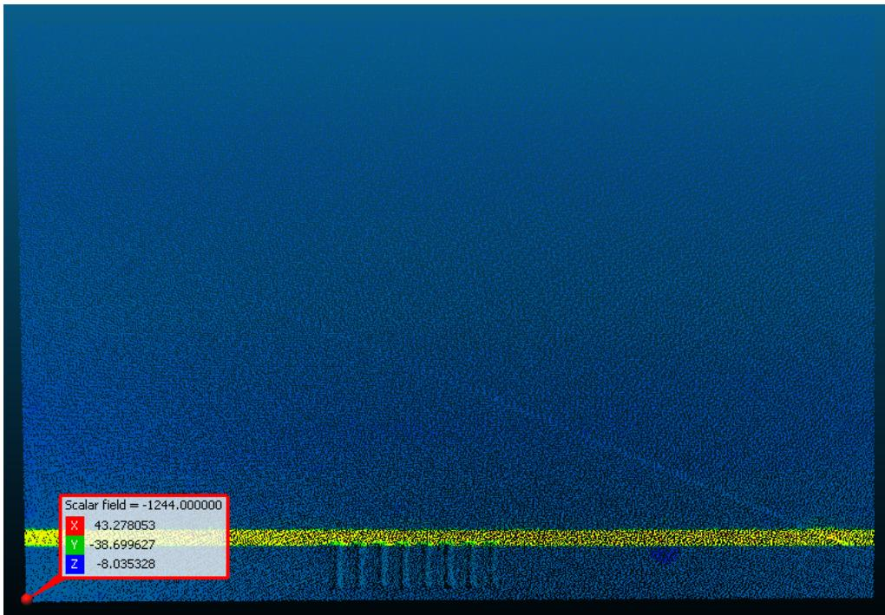
3D point cloud of a single slab [1]LiDAR systems used for pavement inspection facilitate the identification of points with the highest and lowest curling and warping through color distribution mapping on 3D models. [1]
The same LiDAR point cloud data utilized for 3D modeling of slab curvature can also support other pavement performance applications, including International Roughness Index (IRI) calculations, cross slope analysis, and crack detection. [1]
Phase II Field Study Findings (IHRB TR-749, 2023)
The Phase II study (Tian et al. 2023) quantified curling across 36 Iowa sites using high-speed profiler data and the 2GCI algorithm:
- Seasonal effects: Fall exhibited the highest curling (LTPP avg. curvature IRI = 109.2 in./mile), spring the lowest (106.6 in./mile)
- Diurnal effects: Morning measurements consistently showed the highest curling (LTPP avg. = 108.6 in./mile) vs. noon (104.7 in./mile)
- SSI High-Speed Profiler: CS9300 inertial profiler with three laser sensors collecting longitudinal profiles at highway speeds
- Second-Generation Curvature Index (2GCI): Algorithm separating curvature-related from non-curvature-related profile components
- Second-order polynomial fitting: Simpler alternative using quadratic curve fitting to each slab
- LiDAR: Stationary LiDAR scanning for 3D slab profile reconstruction at selected sites
- ISU Portable Curling and Warping Device: Static mid-chord deflection measurement using a taut rope between steel columns
Inclinometer profiling can be conducted using specific path patterns such as Level A (loop along the outside pavement edge and at mid-slab), Level B (loops at 1.5 ft and 3 ft from edges/joints), or Level C (butterfly loops of transverse and diagonal traces). [3]
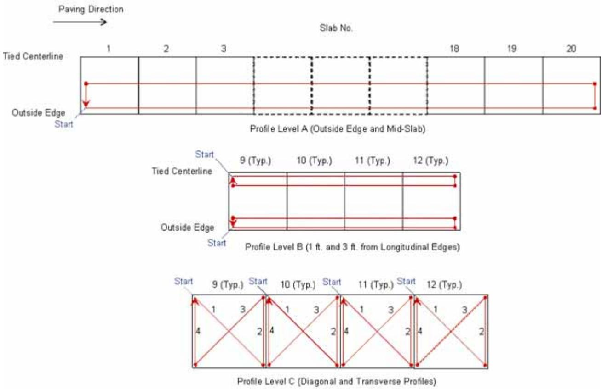
Inclinometer profiling levels and paths [3]The MATLAB-based Second-Generation Curvature Index (2GCI) algorithm processes raw profile data to compute multiple curling indicators, including curvature IRI, deflection, deflection ratio, and degree of curvature. This computational approach removes the slab grade before curve fitting and re-applies it after fitting each slab to generate continuous profiles that closely match actual pavement conditions. [4]
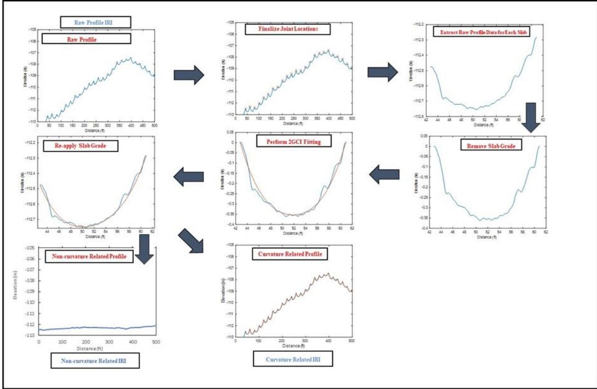
2GCI algorithm flowchart [4]The 2GCI algorithm has two primary limitations: users must visually verify the curling direction from raw profile plots before processing, as flat surfaces make upward or downward deflection difficult to discern. Additionally, joint detection accuracy can be compromised by surface distress, non-straight driving paths, and sealed joints, potentially introducing a 2 to 3 ft error range in joint location identification. [4]
Modeling Curling Stresses
The HIPERPAV program models early-age curling stresses by integrating structural inputs, such as transverse joint spacing and slab thickness, with material properties including the concrete’s modulus of elasticity and strength development rates [5]. To simulate thermal gradients across the slab depth, environmental factors such as air temperature, relative humidity distribution, and wind speed are also incorporated [5]. Additionally, finite element models using EverFE 2.24 can simulate actual slab curvature behavior by incorporating permanent curling and warping effects [2].
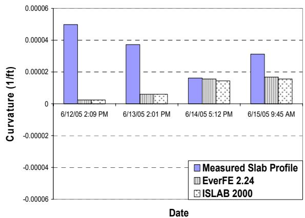
Transverse Direction @ Positive Temp. Diff. Figure 38. Burlington site, afternoon paving—comparisons of curvature (k) between measured and FE-predicted slab curvature profiles [2]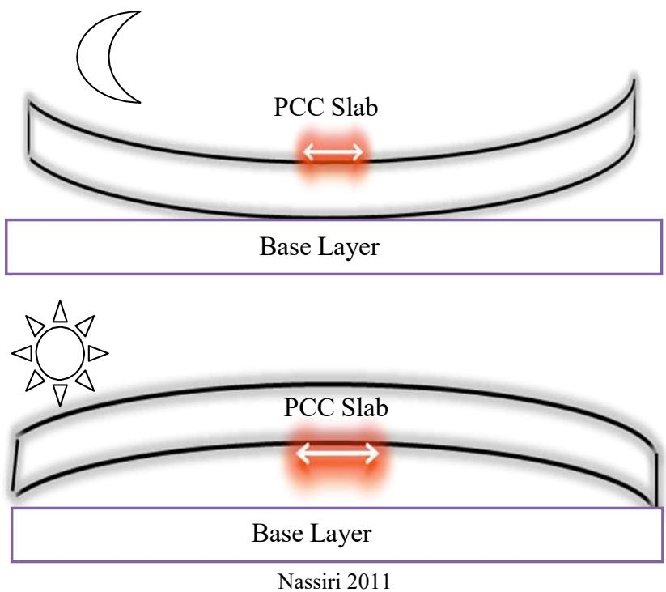
Stresses exerted due to PCC curling and warping: tensile stress exerted at top of PCC slab with upward curvature (top), and tensile stress exerted at bottom of PCC slab with downward curvature (bottom) [1]Mitigation Strategies and Mix Design
To mitigate curling and warping in concrete pavements, mix designs should utilize coarse aggregates with larger maximum sizes, higher specific gravity, lower coefficient of thermal expansion (CTE), and lower water absorption [1], while using fine aggregates with coarser particles and lower water absorption further mitigates these effects [1]. Effective designs also incorporate more coarse aggregate and less paste [1], specifically ensuring that paste volume does not exceed 25% of the volume of the concrete per Section 6.4.1 of AASHTO R 101-22 [7]. Cement types containing lower tricalcium aluminate (C3A) and alkali content help reduce warping [1], and an alternative approach to addressing shrinkage is to limit unrestrained shrinkage to less than 420 microstrain (με) at 28 days, per AASHTO T 160 [7]. Construction factors also play a role; paving during the latter half of the day or at nighttime can reduce solar radiation exposure [1], though morning paving operations produce smoother JPCP pavements compared to afternoon paving, as daytime placement induces positive temperature gradients prior to hardening followed by nighttime cooling [2]. Additionally, ensuring adequate wetting cycles post-construction can reduce early-age drying [1].
Structural improvements include using shorter joint spacing (≤15 ft preferred over Iowa’s typical 20 ft) [1], though the use of internal curing mitigates the negative effects of increasing joint spacing from 15 to 20 feet on transverse cracking by decreasing CTE, modulus of elasticity, and ultimate shrinkage while simultaneously increasing concrete strength [8]. Furthermore, fiber reinforcement in concrete overlays can potentially extend joint spacing limits to 30 or 40 feet by preventing mid-slab transverse cracking, a failure mode typically observed in plain concrete sections with such extended spacings [10]. Such structural macrofibers increase fatigue capacity and fracture toughness while controlling differential slab movement caused by curling and warping, effectively holding cracks tightly together [12]. Regarding shoulder type, tied PCC shoulders significantly reduced curling vs. untied shoulders (deflection ratio: 3.71 vs. 5.53) [1], and they provide superior performance in mitigating longitudinal cracking compared to HMA or granular shoulders, with field data showing minimal cracking even under high traffic volumes when tied concrete shoulders are utilized [9]. Statistical analysis using one-way ANOVA identified that rectangular joints, tied PCC shoulders, and quality management concrete (QMC) mix designs significantly reduce curling and warping behavior compared to skewed joints, untied shoulders, and pre-QMC mixes [4], with QMC mixes specifically showing reduced curling compared to pre-QMC mixes (deflection ratio: 4.82 vs. 5.98) [1]. Finally, temperature validation showed that curvature IRI, deflection, and deflection ratio all approached zero when the total equivalent temperature difference was near 0°F, confirming the -10°F MEPDG default is reasonable [4], while multiple linear regression models were developed to predict these behaviors based on environmental variables and construction factors [4].
 Multiple linear regression modelss prediction results for county roads and city streets: (a) curvature IRI, (b) deflection, (c) deflection ratio, (d) degree of curvature [4]
Multiple linear regression modelss prediction results for county roads and city streets: (a) curvature IRI, (b) deflection, (c) deflection ratio, (d) degree of curvature [4]
Internal Curing Mechanisms
Internal Curing Effects on Curling (IHRB TR-746)
Internal curing reduces curling by buffering temperature gradients through the thermal mass of saturated LWFA and by reducing moisture gradients. At two Iowa field sites:
- Temperature gradients: IC sections showed reduced temperature differentials, though the effect was less consistent than the moisture gradient reduction
- 3D movement models: IC sections exhibited significantly lower deflection for extreme moisture and temperature differentials compared to CC sections
- The reduction in combined curling/warping movement suggests slab sizes could be extended for IC pavements, keeping saw-cuts out of the wheelpath [13]
Internal curing using prewetted lightweight fine aggregate (LWFA) or superabsorbent polymers (SAPs) can reduce built-in curling stress by buffering temperature gradients through the thermal mass of saturated aggregates and reducing moisture gradients within the slab. This mechanism allows for potential reductions in slab thickness for continuously reinforced concrete pavement (CRCP) applications where internal curing mitigates stresses associated with moisture gradients. [14]
 Conventional curing compared to internal curing [14]
Conventional curing compared to internal curing [14]
The application of internal curing in high early-strength concrete pavement patches provides reduced built-in stress caused by the restraint of shrinkage and increased water curing after the patches are covered with curing compound and opened to traffic. This dual benefit distinguishes internally cured patching materials from conventional concrete mixes used for similar repairs. [14]
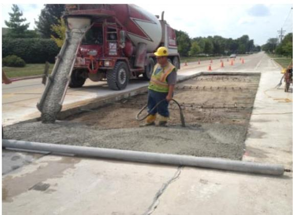
Example of internally cured concrete being used for concrete pavement patching [14]Internally cured concrete mixtures can be designed using the mixture proportions of conventional concrete combined with properties of lightweight fine aggregate (LWFA), maintaining similar workability, strength development, and mechanical properties while reducing stress development and cracking. The water absorbed by the internal curing agent before set is used for curing and does not contribute to the water-to-cementitious materials ratio (w/cm) that determines pore structure. [14]
 Conceptual illustration of volumetric components in a plain and internally cured mixture [14]
Conceptual illustration of volumetric components in a plain and internally cured mixture [14]
Research is evaluating internal curing for whitetopping and ultra-thin whitetopping (UTW) applications as a method to reduce built-in stress caused by restrained shrinkage, potentially offering benefits similar to those observed in jointed plain concrete pavement (JPCP). If internally cured mixtures successfully reduce curling and built-in stress in these thin overlays, they may extend the service life of whitetopping structures. [14]
Internal curing using prewetted lightweight fine aggregate (LWFA) reduces slab curling by buffering temperature gradients through the thermal mass of saturated aggregates and reducing moisture gradients within the concrete matrix. [13]
Related Concepts
- pavement-warping (moisture-driven counterpart)
- coefficient-of-thermal-expansion
- temperature-gradient-effects
- built-in-curling
- curvature-iri
- deflection-ratio
- degree-of-curvature-curling
- pseudo-strain-gradient
- equivalent-temperature-difference
- Curling and Warping
Related Concepts
Unbonded concrete overlays on concrete (UBCOCs) perform better than bonded concrete overlays on concrete (BCOCs), with 90% of UBCOCs achieving good to excellent condition compared to 72% for BCOCs. [12]
Related Concepts
Unbonded concrete overlays on asphalt (UBCOAs) perform slightly better than bonded concrete overlays on asphalt (BCOAs), with 94% of UBCOAs achieving good to excellent condition compared to 88% for BCOAs. [12]
References
- H. Ceylan, S. Yang, K. Gopalakrishnan, S. Kim, P. Taylor, and A. Alhasan, "Impact of Curling and Warping on Concrete Pavement," Institute for Transportation, Ames, IA, Rep. TR-668, 2016. [Online]. Available: https://www.intrans.iastate.edu/wp-content/uploads/2018/03/curling_and_warping_impact_on_concrete_pvmt_w_cvr.pdf
- H. Ceylan, S. Kim, D. J. Turner, R. O. Rasmussen, G. K. Chang, J. Grove, and K. Gopalakrishnan, "Impact of Curling, Warping, and Other Early-Age Behavior on Concrete Pavement Smoothness: EFD Study (Phase II)," Center for Transportation Research and Education, Ames, IA, 2007. [Online]. Available: https://www.intrans.iastate.edu/wp-content/uploads/2018/03/curling_warping-2.pdf
- H. Ceylan, D. J. Turner, R. O. Rasmussen, G. K. Chang, J. Grove, S. Kim, and C. S. Reddy, "Impact of Curling, Warping, and Other Early-Age Behavior on Concrete Pavement Smoothness: EFD Study (Phase I)," Center for Transportation Research and Education, Iowa State University, Ames, IA, Rep. DTFH61-01-X-00042 (Project 16), 2005. [Online]. Available: https://www.intrans.iastate.edu/wp-content/uploads/2018/03/curling_warping-2.pdf
- K. Tian, D. King, B. Yang, S. Kim, A. Alhasan, and H. Ceylan, "Impact of Curling and Warping on Concrete Pavement: Phase II," Program for Sustainable Pavement Engineering and Research (PROSPER), Iowa State University, Ames, IA, Rep. TR-749, 2023. [Online]. Available: https://intrans.iastate.edu/app/uploads/2023/06/Impact_of_Curling_and_Warping_Phase_II_w_cvr.pdf
- K. Wang and Z. Ge, "Evaluating Properties of Blended Cements for Concrete Pavements," Department of Civil, Construction and Environmental Engineering, Iowa State University, Ames, IA, 2003. [Online]. Available: https://www.intrans.iastate.edu/wp-content/uploads/2018/03/blended_cements-1.pdf
- H. Ceylan, L. Dong, S. Yang, Y. Jiao, S. Yavas, S. Kim, K. Gopalakrishnan, and P. Taylor, "Development of a Wireless MEMS Multifunction Sensor System and Field Demonstration of Embedded Sensors for Monitoring Concrete Pavements, Volume I," Institute for Transportation, Ames, IA, Rep. TR-637, 2016. [Online]. Available: https://prosper.intrans.iastate.edu/wp-content/uploads/2018/03/wireless_MEMS_volume_I_field_demo_w_cvr.pdf
- J. Gross, J. Weiss, T. Ley, P. Taylor, N. Weitzel, T. Van Dam, G. Smith, and C. Jones, "Performance-Engineered Concrete Paving Mixtures," National Concrete Pavement Technology Center, Iowa State University, Ames, IA, Rep. TPF-5(368), 2022. [Online]. Available: https://www.intrans.iastate.edu/wp-content/uploads/2023/04/performance-engineered_concrete_paving_mixtures_w_cvr.pdf
- P. Vosoughi, S. Tritsch, H. Ceylan, and P. Taylor, "Lifecycle Cost Analysis of Internally Cured Jointed Plain Concrete Pavement," National Concrete Pavement Technology Center, Ames, IA, Rep. TR-676, 2017. [Online]. Available: https://publications.iowa.gov/27038/
- H. Ceylan, S. Kim, Y. Zhang, S. Yang, O. Kaya, K. Gopalakrishnan, and P. Taylor, "Prevention of Longitudinal Cracking in Iowa Widened Concrete Pavement," Institute for Transportation, Ames, IA, Rep. TR-700, 2018. [Online]. Available: https://www.intrans.iastate.edu/wp-content/uploads/2018/07/longitudinal_cracking_prevention_in_widened_concrete_pvmt_w_cvr.pdf
- D. King, B. Yang, P. Taylor, and H. Ceylan, "Field Performance of Fiber-Reinforced Concrete Overlays," Institute for Transportation, Iowa State University, Ames, IA, Rep. TR-816, 2025. [Online]. Available: https://www.intrans.iastate.edu/wp-content/uploads/2025/05/field_performance_of_frc_overlays_w_cvr.pdf
- H. Ceylan, A. Guclu, M. B. Bayrak, and K. Gopalakrishnan, "Nondestructive Evaluation of Iowa Pavements, Phase 1," CTRE, Iowa State University, Ames, IA, Rep. CTRE 04-177, 2007. [Online]. Available: https://www.intrans.iastate.edu/wp-content/uploads/2018/03/nde-pavements.pdf
- J. Gross, D. King, D. Harrington, H. Ceylan, Y. A. Chen, S. Kim, P. Taylor, and O. Kaya, "Concrete Overlay Performance on Iowa's Roadways (Field Data Report)," National Concrete Pavement Technology Center, Ames, IA, Rep. TR-698, 2017. [Online]. Available: https://www.intrans.iastate.edu/wp-content/uploads/2017/09/Iowa_concrete_overlay_performance_w_cvr.pdf
- A. Daghighi, P. Taylor, H. Ceylan, and Y. Zhang, "Impacts of Internally Cured Concrete Paving on Contraction Joint Spacing Phase II," National Concrete Pavement Technology Center, Iowa State University, Ames, IA, Rep. TR-746, 2021. [Online]. Available: https://www.cptechcenter.org/wp-content/uploads/2021/05/IC_concrete_paving_impacts_phase_II_field_impl_w_cvr.pdf
- W. J. Weiss and L. Montanari, "Guide Specification for Internally Curing Concrete," National Concrete Pavement Technology Center, Ames, IA, Rep. TPF-5(286), 2017. [Online]. Available: https://www.intrans.iastate.edu/wp-content/uploads/2018/09/IC_guide_spec_w_cvr.pdf